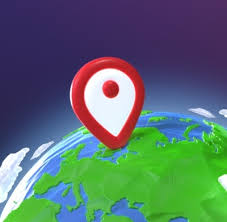

IMPORTANT DETAILS
- The Great Lakes hold 84% of North America freshwater.
- They provide drinking water for nearly 10 percent of Americans.
- They contain 23 quadrillion liters of water.

Outline
The largest freshwater system globally is known as the Great Lakes. They were formed long ago from glaciers. As the glaciers melt, the fresh meltwater settles into these newly created grounds. The Great Lakes lie between the United States and Canada; they touch Minnesota, Wisconsin, Illinois, Indiana, Michigan, Ohio, Pennsylvania, and New York, as well as the provinces Ontario and Quebec, if you include the St. Lawrence Seaway.
Below are the five great lakes, in order from largest to smallest, and three of which are elaborated on in this website:
- Lake Superior -
- Lake Huron
- Lake Michigan -
- Lake Erie
- Lake Ontario -
Importance
The Great Lakes are significant in many ways. To begin, think about the water on the Earth. Roughly 97% of the earth’s water is saltwater. Of the 3 percent freshwater, most is locked up or inaccessible because it is too far underground. About less than one percent of the freshwater on earth is available to a population of 8.2 billion people, and many of those people don’t have access to safe drinking water. To add on, one in every five glasses of the available freshwater available on the surface comes from the Great Lakes. As a person, you probably use a considerable amount of water every day; whether it’s for washing the dishes, taking a bath, or just playing. The Great Lakes provide an abundant amount of water to the Earth. But that’s not the only reason the Great Lakes are so significant.
Thousands of years ago, Native Americans began using the lake's rich resources, and then the Europeans settled along the lakes. The Great Lakes provided them with fish, drinking water, and a home. Not so long ago, unfortunately, people started overusing the lake's resources, clearing forests, building factories, overfishing waters, polluting the lakes, and taking way more than needed. The largest freshwater system on Earth is struggling, and the protection of this great national treasure is urgent.
Challenges Facing the Great Lakes


Prevention
- Preserve our drainage systems: Be aware of the stuff you flush or throw down the drain. Flushing or disposing of chemicals or other dangerous substances can hinder the work of maintenance workers. Besides that, it may get into lakes, possibly the Great Lakes, damaging the largest freshwater system.
- Pick up trash near lakes: Every time you take a walk or hike around the lake, take a moment and pick it up. By doing that you’ve just prevented that piece of trash from getting into lakes polluting it, and harming the animals.
- Reduce our water consumption: We are using an average of 3.75 billion gallons of water every day. Taking a simple action like turning off the water when you’re not using it can decrease this number by a big amount.
- Educate friends and family members: Teach others about the importance of the Great Lakes to bring their attention to that topic.
Entertainment
Are you an expert on the Great Lakes?
Try these games and quizzes!
|  |

|
Learn more about the Great Lakes!
| Great Lakes | Links |
|---|---|
| Lake Erie | https://www.glc.org/lakes/lake-erie |
| Lake Huron | https://www.glc.org/lakes/lake-huron |
| Lake Michigan | https://www.glc.org/lakes/lake-michigan | Lake Ontario | https://www.glc.org/lakes/lake-ontario |
| Lake Superior | https://www.glc.org/lakes/lake-superior |
If you’re not in the mood to read, check out this videos!